{kind=link}
{kind=link}
{kind=link}
{kind=link}
library(tidyverse)
library(sf)
library(tigris)
library(tidycensus)
library(tidygraph)
library(ggraph)Note: high-res images of the main graphs from this post are available here, here, here, and here.
In this post I will use networks plots to analyze patterns of commuters in Allegheny County. I use the LEHD Origin-Destination Employment Statistics (LODES) dataset provided by the U.S. Census Bureau. This dataset contains summarized and anonymized estimate data regarding where people live and work. I use this data to map where Allegheny County residents live and work.
In my analysis I use many of the standard tidyverse packages, sf, tidygraph, and ggraph.
The first step is to read in the geographies crosswalk and the census tract geographies.
geo_crosswalk <- read_csv("post_data/pa_xwalk.csv.gz", col_types = cols(.default = "c"))
allegheny_tracts <- get_decennial(geography = "tract",
variables = c(total_pop = "P001001"),
state = "PA",
county = "Allegheny County",
geometry = TRUE,
output = "wide",
year = 2010)
st_erase <- function(x, y) {
st_difference(x, st_union(st_combine(y)))
}
rivers <- area_water("PA", "Allegheny", class = "sf")This shows the outlines of the tracts used in the analysis.
allegheny_tracts %>%
ggplot() +
geom_sf()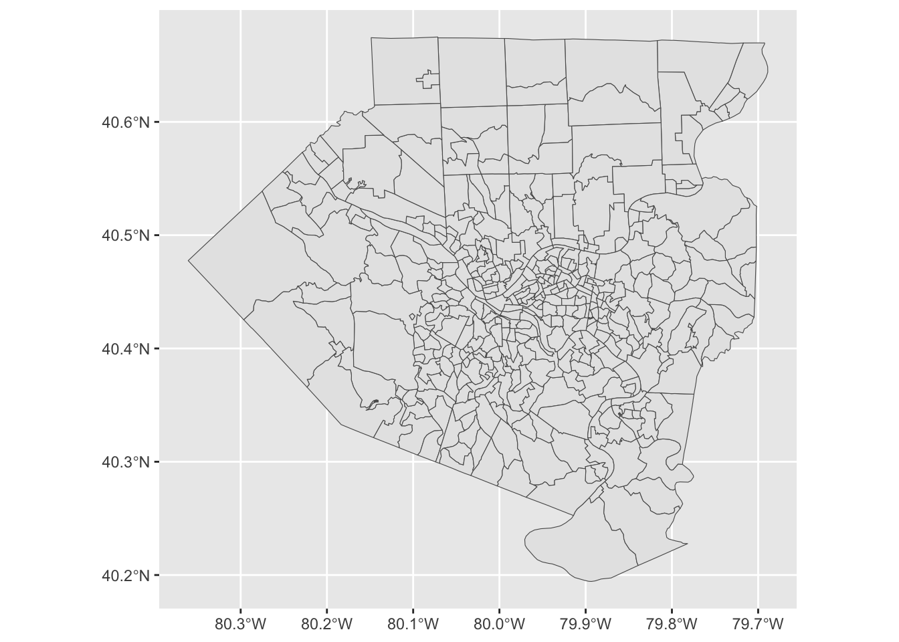
The crosswalk file contains keys to join a variety of geographies.
geo_crosswalk# A tibble: 421,545 × 43
tabblk2010 st stusps stname cty ctyname trct trctname bgrp bgrpname
<chr> <chr> <chr> <chr> <chr> <chr> <chr> <chr> <chr> <chr>
1 420912030002… 42 PA Penns… 42091 Montgo… 4209… 2030 (M… 4209… 2 (Trac…
2 420912070013… 42 PA Penns… 42091 Montgo… 4209… 2070.01… 4209… 3 (Trac…
3 420912070013… 42 PA Penns… 42091 Montgo… 4209… 2070.01… 4209… 3 (Trac…
4 420710144022… 42 PA Penns… 42071 Lancas… 4207… 144.02 … 4207… 2 (Trac…
5 420710144022… 42 PA Penns… 42071 Lancas… 4207… 144.02 … 4207… 2 (Trac…
6 420710134002… 42 PA Penns… 42071 Lancas… 4207… 134 (La… 4207… 2 (Trac…
7 420710144022… 42 PA Penns… 42071 Lancas… 4207… 144.02 … 4207… 2 (Trac…
8 420710144022… 42 PA Penns… 42071 Lancas… 4207… 144.02 … 4207… 2 (Trac…
9 420710144022… 42 PA Penns… 42071 Lancas… 4207… 144.02 … 4207… 2 (Trac…
10 420710144022… 42 PA Penns… 42071 Lancas… 4207… 144.02 … 4207… 2 (Trac…
# ℹ 421,535 more rows
# ℹ 33 more variables: cbsa <chr>, cbsaname <chr>, zcta <chr>, zctaname <chr>,
# stplc <chr>, stplcname <chr>, ctycsub <chr>, ctycsubname <chr>,
# stcd116 <chr>, stcd116name <chr>, stsldl <chr>, stsldlname <chr>,
# stsldu <chr>, stslduname <chr>, stschool <chr>, stschoolname <chr>,
# stsecon <chr>, stseconname <chr>, trib <chr>, tribname <chr>, tsub <chr>,
# tsubname <chr>, stanrc <chr>, stanrcname <chr>, necta <chr>, …Next I read in the main LODES data. This is a big file, so it takes a moment.
df <- read_csv("post_data/pa_od_main_JT00_2015.csv.gz", col_types = cols(.default = "c")) %>%
mutate(S000 = as.numeric(S000)) %>%
select(h_geocode, w_geocode, S000)
df# A tibble: 4,961,712 × 3
h_geocode w_geocode S000
<chr> <chr> <dbl>
1 420010303001089 420010301011013 1
2 420410126001030 420010301011013 1
3 421330217111050 420010301011013 1
4 420010301011029 420010301011016 1
5 420010301011063 420010301011016 1
6 420010301011090 420010301011016 1
7 420010302001079 420010301011016 1
8 420010302001089 420010301011016 1
9 420010304003043 420010301011016 1
10 420010307002014 420010301011016 1
# ℹ 4,961,702 more rowsNext I summarize the number of commuters per home-work tract combination. The original file uses census block codes, which are too granular for this analysis. I link the blocks to census tracts and aggregate to that level.
df_tracts_summarized <- df %>%
group_by(h_geocode, w_geocode) %>%
summarize(commuters = sum(S000)) %>%
ungroup() %>%
arrange(desc(commuters))
df_tracts_summarized <- df_tracts_summarized %>%
left_join(geo_crosswalk %>% select(tabblk2010, trct), by = c("h_geocode" = "tabblk2010")) %>%
rename(h_tract = trct) %>%
left_join(geo_crosswalk %>% select(tabblk2010, trct), by = c("w_geocode" = "tabblk2010")) %>%
rename(w_tract = trct)
df_tracts_summarized <- df_tracts_summarized %>%
group_by(h_tract, w_tract) %>%
summarize(commuters = sum(commuters)) %>%
ungroup() %>%
arrange(desc(commuters))
df_tracts_summarized <- df_tracts_summarized %>%
semi_join(allegheny_tracts, by = c("h_tract" = "GEOID")) %>%
semi_join(allegheny_tracts, by = c("w_tract" = "GEOID"))This code removes rows where the commuter lives and works in the same tract.
df_tracts_summarized <- df_tracts_summarized %>%
arrange(h_tract) %>%
na.omit() %>%
filter(!(h_tract == w_tract))This code finds the center of each tract, which I use as the nodes in the network plots.
allegheny_tracts <- allegheny_tracts %>%
arrange(GEOID)
allegheny_tracts_centroids <- cbind(allegheny_tracts,
st_coordinates(st_centroid(allegheny_tracts))) %>%
st_set_geometry(NULL) %>%
as_tibble() %>%
rename(x = X,
y = Y) %>%
select(GEOID, x, y)This shows that the centroids correctly appear in the center of each tract.
allegheny_tracts %>%
ggplot() +
geom_sf() +
geom_point(data = allegheny_tracts_centroids, aes(x, y), size = .2)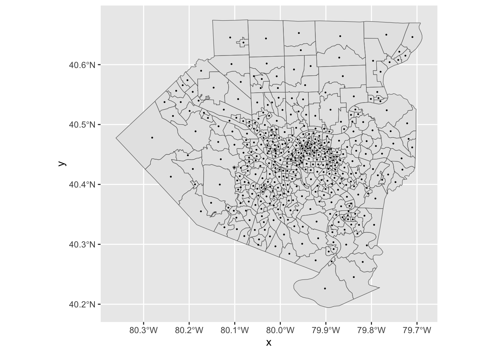
EDA
First, I do some exploratory analysis of the number of commuters in/out per tract. Since we cannot join the census geography dataframe to the LODES data directly, I reverse engineer the process by splitting the data into separate “home” and “work” dataframes, and then joining the census geography dataframe to those dataframes.
df_home <- df_tracts_summarized %>%
rename(tract = h_tract,
commuters_out = commuters) %>%
select(-w_tract) %>%
group_by(tract) %>%
summarize(commuters_out = sum(commuters_out))
df_work <- df_tracts_summarized %>%
rename(tract = w_tract,
commuters_in = commuters) %>%
select(-h_tract) %>%
group_by(tract) %>%
summarize(commuters_in = sum(commuters_in))This checks that there are no duplicate tracts in either dataframe:
df_home %>%
count(tract, sort = TRUE) %>%
filter(n > 1)# A tibble: 0 × 2
# ℹ 2 variables: tract <chr>, n <int>df_home %>%
count(tract, sort = TRUE) %>%
filter(n > 1)# A tibble: 0 × 2
# ℹ 2 variables: tract <chr>, n <int>This joins the separate dataframes back to the census geography dataframe:
allegheny_tracts <- allegheny_tracts %>%
left_join(df_home, by = c("GEOID" = "tract")) %>%
left_join(df_work, by = c("GEOID" = "tract")) %>%
replace_na(list(commuters_in = 0))The tract with many more commuters “in” is downtown Pittsburgh.
allegheny_tracts %>%
ggplot(aes(commuters_out, commuters_in, label = NAME)) +
geom_point() +
theme_bw()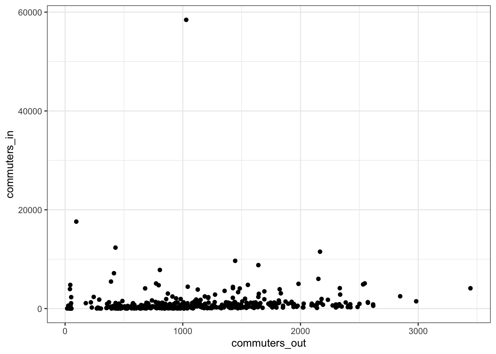
allegheny_tracts %>%
ggplot() +
geom_sf(aes(fill = commuters_in), color = NA) +
scale_fill_viridis_c() +
theme_graph()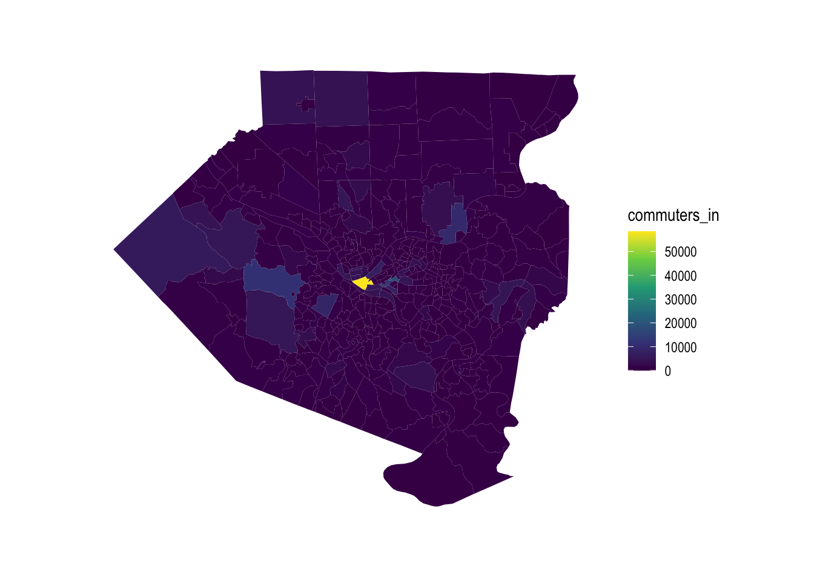
This shows which tracts have the most outflow of commuters:
allegheny_tracts %>%
ggplot() +
geom_sf(aes(fill = commuters_out), color = NA) +
scale_fill_viridis_c() +
theme_graph()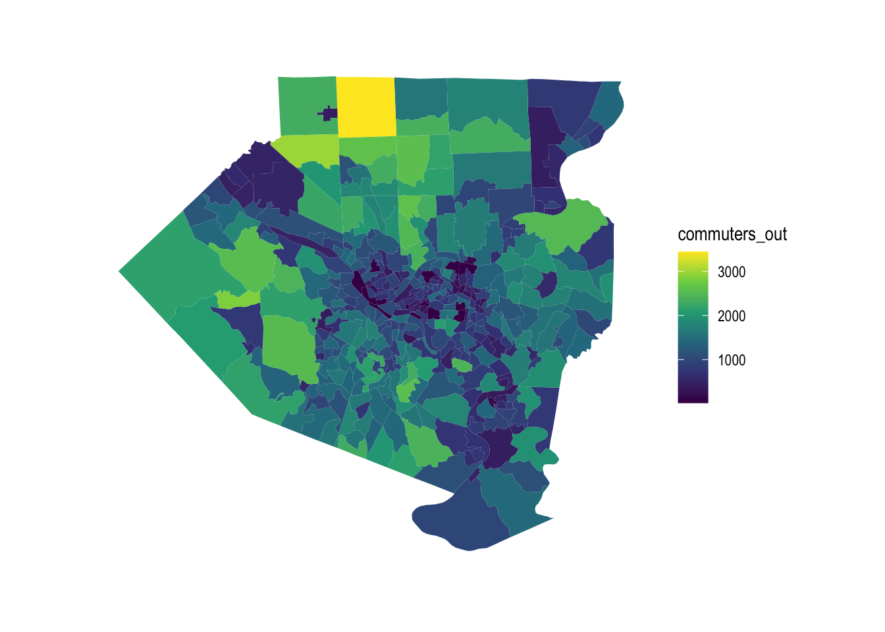
The outflow of commuters tracks with the population of the tract, with some exceptions.
allegheny_tracts %>%
ggplot(aes(commuters_out, total_pop)) +
geom_point() +
theme_bw()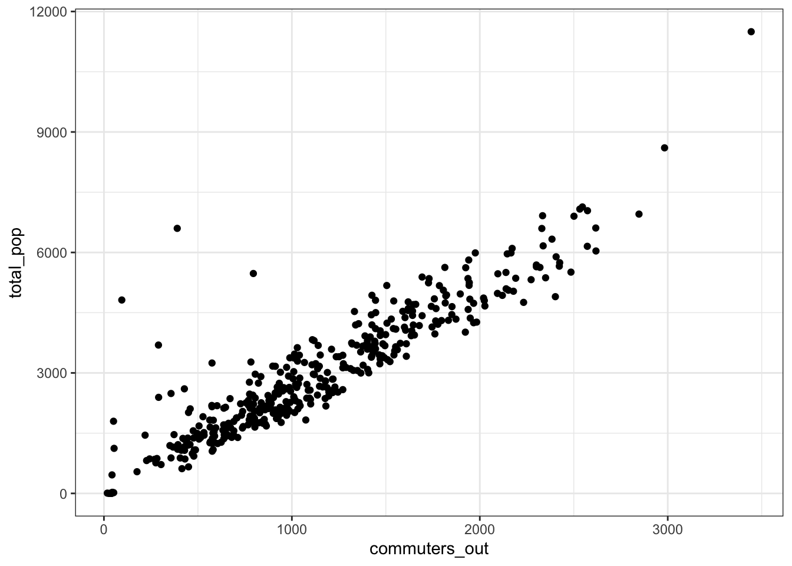
Downtown Pittsburgh dominates in terms of inflow vs. outflow differential.
allegheny_tracts %>%
mutate(diff = commuters_in - commuters_out) %>%
ggplot() +
geom_sf(aes(fill = diff), color = NA) +
scale_fill_viridis_c("Commuters in minus commuters out", direction = 1) +
theme_graph()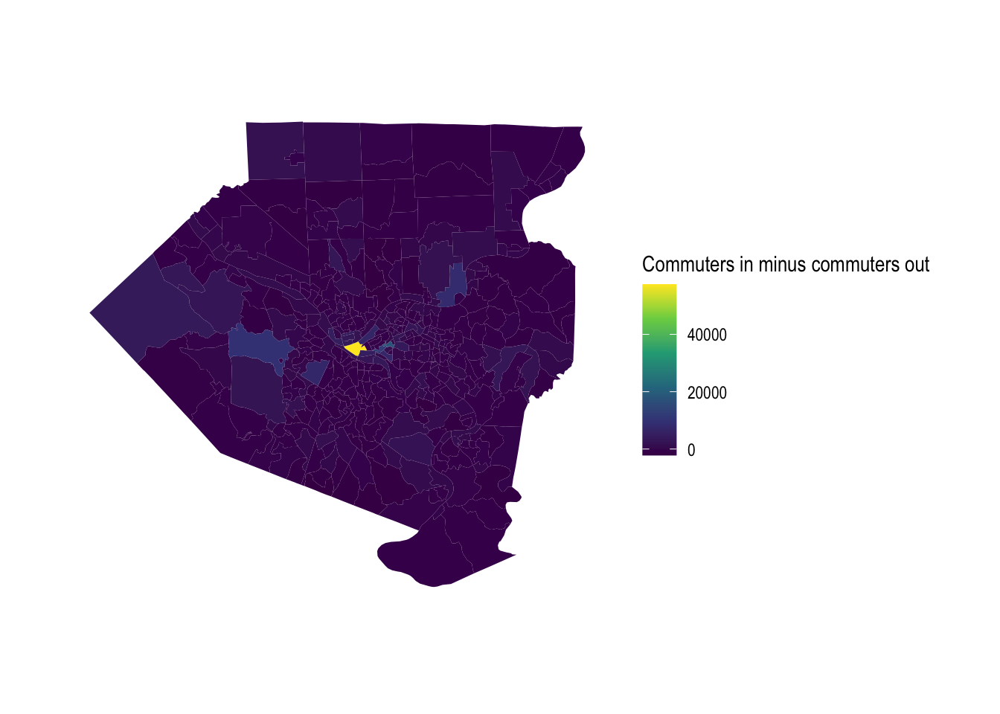
Set up main graph
With the exploratory analysis done, I move on to the main task of making a geographic network plot where the nodes are the center of each census tract.
First, I set a minimum threshhold for the number of commuters flowing between two tracts. Then, I transform the df_tracts_summarized data into a tbl_graph object, which lets it be used for network analysis.
minimum_commuters <- 100
g <- df_tracts_summarized %>%
as_tbl_graph(directed = TRUE)
g# A tbl_graph: 402 nodes and 74239 edges
#
# A directed simple graph with 1 component
#
# Node Data: 402 × 1 (active)
name
<chr>
1 42003010300
2 42003020100
3 42003020300
4 42003030500
5 42003040200
6 42003040400
7 42003040500
8 42003040600
9 42003040900
10 42003050100
# ℹ 392 more rows
#
# Edge Data: 74,239 × 3
from to commuters
<int> <int> <dbl>
1 1 2 73
2 1 5 22
3 1 64 15
# ℹ 74,236 more rowsThe result is a list of two dataframes; one for the nodes, one for the edges.
This filters out the edges that do not meet the minimum threshhold.
g_main <- g %>%
activate(edges) %>%
filter(commuters > minimum_commuters)
g_main# A tbl_graph: 402 nodes and 360 edges
#
# A directed simple graph with 136 components
#
# Edge Data: 360 × 3 (active)
from to commuters
<int> <int> <dbl>
1 4 2 143
2 10 2 103
3 11 2 142
4 15 2 178
5 16 2 101
6 17 2 115
7 18 2 284
8 18 402 158
9 19 2 136
10 19 402 117
# ℹ 350 more rows
#
# Node Data: 402 × 1
name
<chr>
1 42003010300
2 42003020100
3 42003020300
# ℹ 399 more rowsThis shows the edges with the most commuters:
g_main %>%
activate(edges) %>%
arrange(desc(commuters))# A tbl_graph: 402 nodes and 360 edges
#
# A directed simple graph with 136 components
#
# Edge Data: 360 × 3 (active)
from to commuters
<int> <int> <dbl>
1 122 2 552
2 75 2 484
3 125 2 440
4 65 2 407
5 79 2 393
6 127 2 389
7 253 2 385
8 249 2 366
9 62 2 361
10 228 2 361
# ℹ 350 more rows
#
# Node Data: 402 × 1
name
<chr>
1 42003010300
2 42003020100
3 42003020300
# ℹ 399 more rowsThis code sets the nodes for the graph at the center of each census tract and creates a manual layout that the network plot will use.
node_pos <- allegheny_tracts_centroids
manual_layout <- create_layout(graph = g_main,
layout = node_pos)# A tibble: 402 × 7
GEOID x y name .ggraph.orig_index .ggraph.index circular
<chr> <dbl> <dbl> <chr> <int> <int> <lgl>
1 42003010300 -80.0 40.4 42003010300 1 1 FALSE
2 42003020100 -80.0 40.4 42003020100 2 2 FALSE
3 42003020300 -80.0 40.5 42003020300 3 3 FALSE
4 42003030500 -80.0 40.4 42003030500 4 4 FALSE
5 42003040200 -80.0 40.4 42003040200 5 5 FALSE
6 42003040400 -79.9 40.4 42003040400 6 6 FALSE
7 42003040500 -80.0 40.4 42003040500 7 7 FALSE
8 42003040600 -80.0 40.4 42003040600 8 8 FALSE
9 42003040900 -80.0 40.4 42003040900 9 9 FALSE
10 42003050100 -80.0 40.4 42003050100 10 10 FALSE
# ℹ 392 more rowsFinally, this sets the parameters for the plot and makes the network graph:
legend_title <- str_c("Minimum: ", minimum_commuters, " commuters")
ggraph(manual_layout) +
geom_sf(data = allegheny_tracts, color = "dark grey", fill = NA) +
geom_sf(data = rivers, fill = "white", color = NA, alpha = .5) +
geom_node_point(alpha = 0) +
geom_edge_fan(aes(edge_width = commuters,
edge_alpha = commuters),
arrow = arrow(length = unit(.5, 'lines')),
start_cap = circle(.1, 'lines'),
end_cap = circle(.2, 'lines'),
color = "white",
strength = .5) +
scale_edge_width_continuous(legend_title, range = c(.1, 1.5)) +
scale_edge_alpha_continuous(legend_title, range = c(.1, .8)) +
scale_fill_viridis_c() +
labs(x = NULL,
y = NULL,
title = "Where do people commute from/to for work?",
subtitle = "Excludes within-tract commuters",
caption = "Based on 2015 US Census LODES dataset | @conor_tompkins") +
theme_graph() +
theme(legend.background = element_rect(fill = "light grey"),
legend.text = element_text(color = "black"),
legend.title = element_text(color = "black"),
panel.background = element_rect(fill = "black"))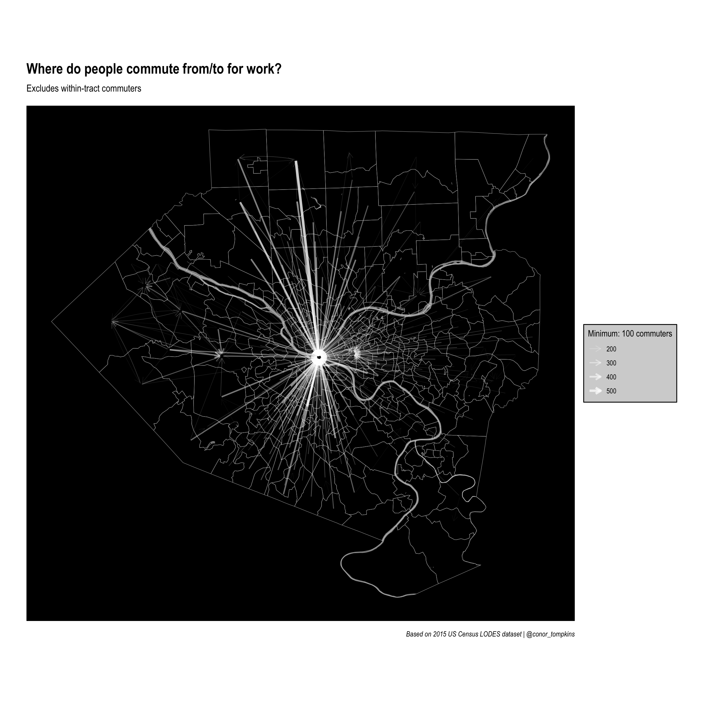
Clearly downtown Pittsburgh attracts the most commuters. This is not surprising, but it obscures other job centers that attract employees.
Set up graph without downtown tract
This code filters out commuters that work downtown. Again, set a threshhold and filter on it.
minimum_commuters <- 100
g_filtered <- g %>%
activate(edges) %>%
filter(commuters > minimum_commuters)
g_filtered# A tbl_graph: 402 nodes and 360 edges
#
# A directed simple graph with 136 components
#
# Edge Data: 360 × 3 (active)
from to commuters
<int> <int> <dbl>
1 4 2 143
2 10 2 103
3 11 2 142
4 15 2 178
5 16 2 101
6 17 2 115
7 18 2 284
8 18 402 158
9 19 2 136
10 19 402 117
# ℹ 350 more rows
#
# Node Data: 402 × 1
name
<chr>
1 42003010300
2 42003020100
3 42003020300
# ℹ 399 more rowsThis code goes into the network data and excludes edges that connect to the downtown tract.
filter_tract <- "42003020100"
selected_node <- manual_layout %>%
filter(name != filter_tract) %>%
pull(.ggraph.orig_index)
g_filtered <- g_filtered %>%
activate(edges) %>%
filter(to %in% selected_node)
g_filtered# A tbl_graph: 402 nodes and 103 edges
#
# A directed simple graph with 333 components
#
# Edge Data: 103 × 3 (active)
from to commuters
<int> <int> <dbl>
1 18 402 158
2 19 402 117
3 20 402 101
4 21 402 287
5 21 5 132
6 24 402 107
7 32 402 131
8 36 402 222
9 37 402 159
10 50 402 158
# ℹ 93 more rows
#
# Node Data: 402 × 1
name
<chr>
1 42003010300
2 42003020100
3 42003020300
# ℹ 399 more rowsThis creates another layout for this plot:
manual_layout_filtered <- create_layout(graph = g_filtered,
layout = node_pos)legend_title <- str_c("Minimum: ", minimum_commuters, " commuters")
ggraph(manual_layout_filtered) +
geom_sf(data = allegheny_tracts, size = .1, fill = NA, color = "dark grey") +
geom_sf(data = rivers, fill = "white", color = NA, alpha = .5) +
geom_edge_fan(aes(edge_width = commuters, edge_alpha = commuters
),
arrow = arrow(length = unit(.5, 'lines')),
start_cap = circle(.1, 'lines'),
end_cap = circle(.2, 'lines'),
color = "white",
strength = .5) +
scale_edge_width_continuous(legend_title, range = c(.1, 1.5)) +
scale_edge_alpha_continuous(legend_title, range = c(.1, .8)) +
scale_fill_viridis_c() +
labs(x = NULL,
y = NULL,
title = "Where do people commute from/to for work?",
subtitle = "Excludes within-tract commuters and commuters to downtown tract",
caption = "Based on 2015 US Census LODES dataset | @conor_tompkins") +
theme_graph() +
theme(legend.background = element_rect(fill = "light grey"),
legend.text = element_text(color = "black"),
legend.title = element_text(color = "black"),
panel.background = element_rect(fill = "black"))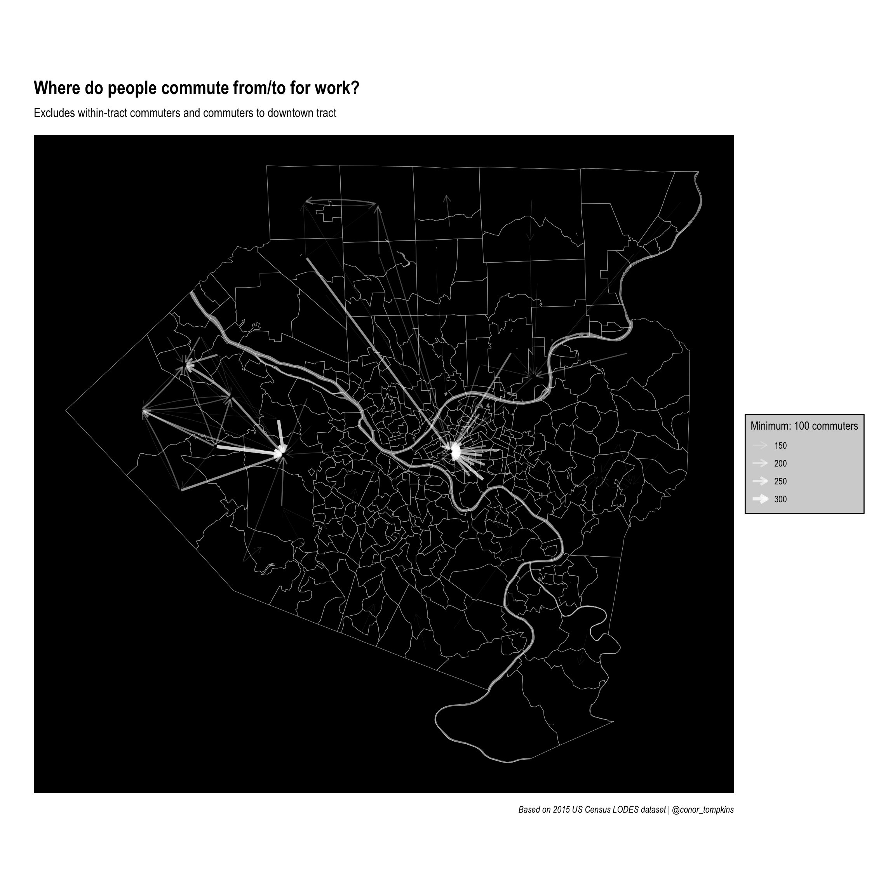
Set up facted graphs
This code creates a faceted plot that focuses on the top 5 tracts in terms of commuter outflow:
minimum_commuters <- 5
top_work_tracts <- df_home %>%
arrange(desc(commuters_out)) %>%
top_n(5, commuters_out) %>%
select(tract)
g_facet <- g %>%
activate(edges) %>%
left_join(manual_layout %>% select(.ggraph.index, name), by = c("from" = ".ggraph.index")) %>%
semi_join(top_work_tracts, by = c("name" = "tract")) %>%
filter(commuters > minimum_commuters)
g_facet %>%
arrange(desc(commuters)) %>%
activate(edges)# A tbl_graph: 402 nodes and 477 edges
#
# A directed simple graph with 237 components
#
# Edge Data: 477 × 4 (active)
from to commuters name
<int> <int> <dbl> <chr>
1 122 2 552 42003409000
2 125 2 440 42003412001
3 127 2 389 42003413100
4 192 202 311 42003453004
5 150 2 300 42003426300
6 192 2 294 42003453004
7 125 402 241 42003412001
8 192 190 209 42003453004
9 192 189 180 42003453004
10 122 124 170 42003409000
# ℹ 467 more rows
#
# Node Data: 402 × 1
name
<chr>
1 42003010300
2 42003020100
3 42003020300
# ℹ 399 more rowsmanual_layout_faceted <- create_layout(graph = g_facet,
layout = node_pos)
manual_layout_faceted %>%
as_tibble()# A tibble: 402 × 7
GEOID x y name .ggraph.orig_index .ggraph.index circular
<chr> <dbl> <dbl> <chr> <int> <int> <lgl>
1 42003010300 -80.0 40.4 42003010300 1 1 FALSE
2 42003020100 -80.0 40.4 42003020100 2 2 FALSE
3 42003020300 -80.0 40.5 42003020300 3 3 FALSE
4 42003030500 -80.0 40.4 42003030500 4 4 FALSE
5 42003040200 -80.0 40.4 42003040200 5 5 FALSE
6 42003040400 -79.9 40.4 42003040400 6 6 FALSE
7 42003040500 -80.0 40.4 42003040500 7 7 FALSE
8 42003040600 -80.0 40.4 42003040600 8 8 FALSE
9 42003040900 -80.0 40.4 42003040900 9 9 FALSE
10 42003050100 -80.0 40.4 42003050100 10 10 FALSE
# ℹ 392 more rowslegend_title <- str_c("Minimum: ", minimum_commuters, " commuters")
ggraph(manual_layout_faceted) +
geom_sf(data = allegheny_tracts, size = .1, fill = NA, color = "dark grey") +
geom_sf(data = rivers, fill = "white", color = NA, alpha = .5) +
geom_edge_fan(aes(edge_width = commuters, edge_alpha = commuters),
arrow = arrow(length = unit(.5, 'lines')),
start_cap = circle(.1, 'lines'),
end_cap = circle(.2, 'lines'),
color = "red",
strength = .5) +
facet_edges(~name) +
scale_edge_width_continuous(legend_title, range = c(.1, 1.5)) +
scale_edge_alpha_continuous(legend_title, range = c(.1, 1)) +
scale_fill_viridis_c() +
labs(x = NULL,
y = NULL,
title = "Where do people commute from/to for work?",
subtitle = "Not including within-tract commuters",
caption = "Based on 2015 US Census LODES dataset | @conor_tompkins") +
theme_graph() +
theme(legend.background = element_rect(fill = "light grey"),
legend.text = element_text(color = "black"),
legend.title = element_text(color = "black"),
panel.background = element_rect(fill = "black"))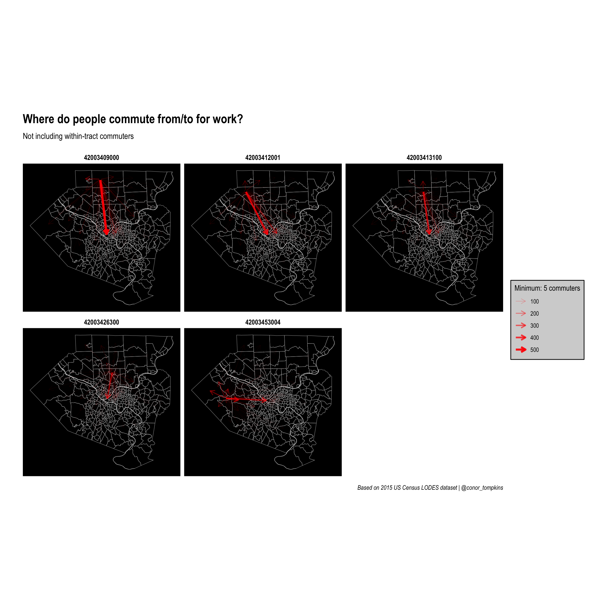
Zoom in on one tract
There also may be tracts of interest outside of the main commuter inflow/outflow tracts. This code creates a framework for filtering on commuters from a selected tract and zooming in on that tract.
Set the threshhold and filter:
minimum_commuters <- 15
g_filtered <- g %>%
activate(edges) %>%
filter(commuters > minimum_commuters)
g_filtered# A tbl_graph: 402 nodes and 5799 edges
#
# A directed simple graph with 11 components
#
# Edge Data: 5,799 × 3 (active)
from to commuters
<int> <int> <dbl>
1 1 2 73
2 1 5 22
3 2 5 87
4 2 402 75
5 2 1 37
6 2 202 35
7 2 50 34
8 2 163 33
9 2 9 32
10 2 400 31
# ℹ 5,789 more rows
#
# Node Data: 402 × 1
name
<chr>
1 42003010300
2 42003020100
3 42003020300
# ℹ 399 more rowsThis code gets the commuter outflow data for one tract and creates allegheny_tracts_highlight, which will be used to highlight the tract of interest.
filter_tract <- "42003473500"
allegheny_tracts_highlight <- allegheny_tracts %>%
semi_join(df_tracts_summarized %>%
filter(h_tract == filter_tract), by = c("GEOID" = "w_tract")) %>%
filter(commuters_in > minimum_commuters)
allegheny_tracts_highlightSimple feature collection with 208 features and 5 fields
Geometry type: MULTIPOLYGON
Dimension: XY
Bounding box: xmin: -80.36087 ymin: 40.20845 xmax: -79.70383 ymax: 40.67494
Geodetic CRS: NAD83
# A tibble: 208 × 6
GEOID NAME total_pop geometry commuters_out commuters_in
* <chr> <chr> <dbl> <MULTIPOLYGON [°]> <dbl> <dbl>
1 4200301… Cens… 6600 (((-79.98077 40.43836, -… 390 5470
2 4200302… Cens… 3629 (((-79.9908 40.44442, -7… 1029 58444
3 4200302… Cens… 616 (((-79.98062 40.45904, -… 415 7155
4 4200304… Cens… 2604 (((-79.96802 40.4429, -7… 428 12340
5 4200304… Cens… 2488 (((-79.94652 40.44508, -… 357 955
6 4200304… Cens… 3694 (((-79.95497 40.4371, -7… 290 1817
7 4200304… Cens… 2969 (((-79.94986 40.43443, -… 805 7822
8 4200305… Cens… 2057 (((-79.96206 40.44863, -… 800 235
9 4200307… Cens… 2197 (((-79.93137 40.45274, -… 769 1343
10 4200307… Cens… 2997 (((-79.92533 40.45499, -… 1367 1277
# ℹ 198 more rowsselected_node <- manual_layout %>%
filter(name == filter_tract) %>%
pull(.ggraph.orig_index)
g_filtered <- g_filtered %>%
activate(edges) %>%
filter(from == selected_node)
g_filtered# A tbl_graph: 402 nodes and 17 edges
#
# A rooted forest with 385 trees
#
# Edge Data: 17 × 3 (active)
from to commuters
<int> <int> <dbl>
1 233 2 286
2 233 402 67
3 233 5 46
4 233 202 41
5 233 229 40
6 233 217 33
7 233 189 28
8 233 190 26
9 233 218 24
10 233 3 23
11 233 1 22
12 233 234 21
13 233 249 21
14 233 241 17
15 233 50 16
16 233 163 16
17 233 375 16
#
# Node Data: 402 × 1
name
<chr>
1 42003010300
2 42003020100
3 42003020300
# ℹ 399 more rowsSet the layout for the graph:
manual_layout_filtered <- create_layout(graph = g_filtered,
layout = node_pos)# A tibble: 402 × 7
GEOID x y name .ggraph.orig_index .ggraph.index circular
<chr> <dbl> <dbl> <chr> <int> <int> <lgl>
1 42003010300 -80.0 40.4 42003010300 1 1 FALSE
2 42003020100 -80.0 40.4 42003020100 2 2 FALSE
3 42003020300 -80.0 40.5 42003020300 3 3 FALSE
4 42003030500 -80.0 40.4 42003030500 4 4 FALSE
5 42003040200 -80.0 40.4 42003040200 5 5 FALSE
6 42003040400 -79.9 40.4 42003040400 6 6 FALSE
7 42003040500 -80.0 40.4 42003040500 7 7 FALSE
8 42003040600 -80.0 40.4 42003040600 8 8 FALSE
9 42003040900 -80.0 40.4 42003040900 9 9 FALSE
10 42003050100 -80.0 40.4 42003050100 10 10 FALSE
# ℹ 392 more rowsThis will be used to zoom in on the selected tract:
zoom_x <- manual_layout_filtered %>%
filter(.ggraph.orig_index == selected_node) %>%
pull(x)
zoom_y <- manual_layout_filtered %>%
filter(.ggraph.orig_index == selected_node) %>%
pull(y)
zoom_magnitude <- .25legend_title <- str_c("Minimum: ", minimum_commuters, " commuters")
ggraph(manual_layout_filtered) +
geom_sf(data = allegheny_tracts, size = .1, fill = NA) +
geom_sf(data = rivers, fill = "white", color = NA, alpha = .5) +
geom_sf(data = allegheny_tracts %>% filter(GEOID == filter_tract),
fill = "grey") +
geom_edge_fan(aes(edge_width = commuters),
arrow = arrow(length = unit(.5, 'lines')),
start_cap = circle(.1, 'lines'),
end_cap = circle(.2, 'lines'),
color = "red",
strength = .5) +
coord_sf(xlim = c(zoom_x - zoom_magnitude, zoom_x + zoom_magnitude),
ylim = c(zoom_y - zoom_magnitude, zoom_y + zoom_magnitude)) +
scale_edge_width_continuous(legend_title, range = c(.1, 1.5)) +
scale_edge_alpha_continuous(legend_title, range = c(.1, .8)) +
scale_fill_viridis_c() +
labs(x = NULL,
y = NULL,
title = "Where do people commute from/to for work?",
subtitle = str_c("From tract", filter_tract, sep = " "),
caption = "Based on 2015 US Census LODES dataset | @conor_tompkins") +
theme_graph() +
theme(legend.background = element_rect(fill = "light grey"),
legend.text = element_text(color = "black"),
legend.title = element_text(color = "black"),
panel.background = element_rect(fill = "black"))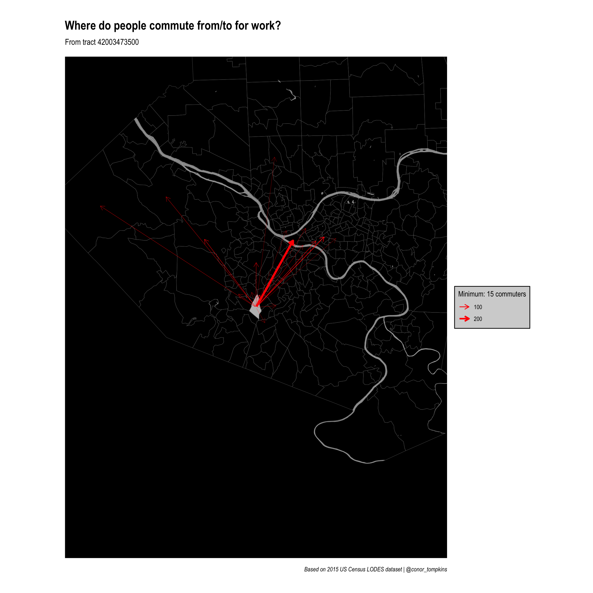
References
- http://www.robertmanduca.com/projects/jobs.html
- https://lehd.ces.census.gov/data/
- https://lehd.ces.census.gov/data/lodes/LODES7/LODESTechDoc7.3.pdf
- https://walkerke.github.io/tidycensus/articles/basic-usage.html